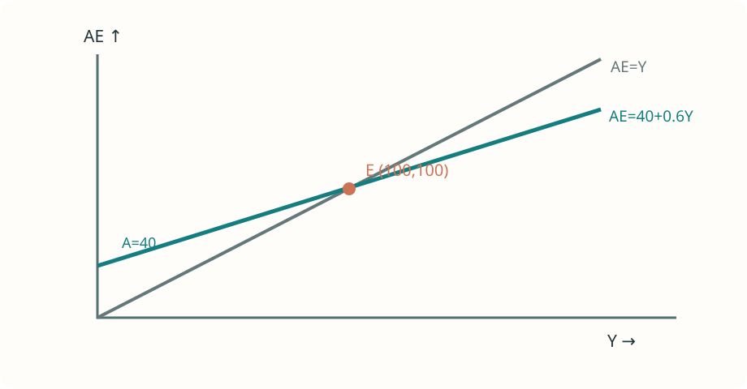
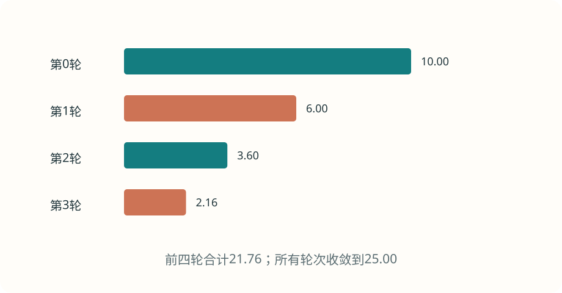
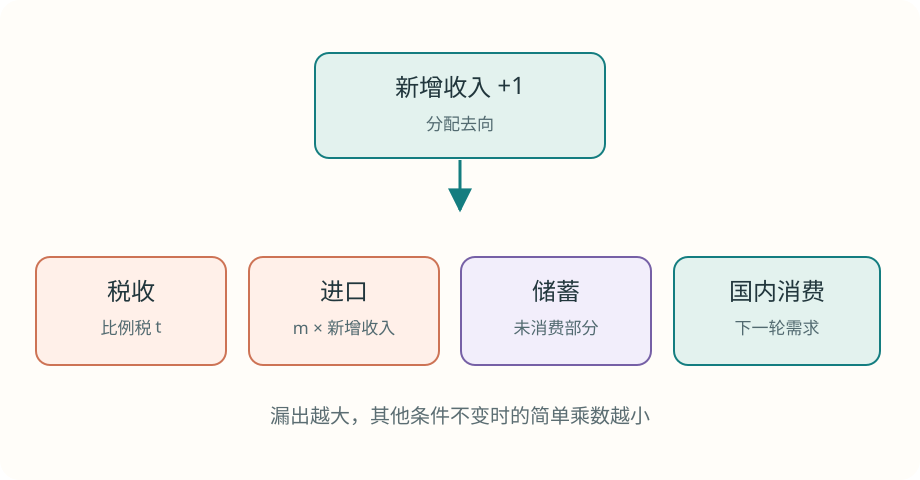

简单国民收入决定
企业为什么会在计划支出高于实际产出时增加产量？用凯恩斯交叉把 45° 线、消费函数与乘数连接起来。
有人愿意买的总量不等于实际生产的总量
在某个短期内，企业按照当下价格生产 Y 单位产品。若家庭、企业和政府原计划购买 AE 单位，且 AE 大于 Y，销售会超过当期生产，不经意间消耗库存；企业可能在下一期提高生产。相反当 AE 小于 Y，计划外库存累积，企业可能减产。计划总支出等于产出才是本模型的短期均衡条件，而不是任何时候经济都会自动停留在该点。

从家庭消费函数推导整条支出线
居民消费设为 C=C₀+c(Y−T)，其中 C₀ 为自主消费、T 为既定净税收、c 为边际消费倾向（MPC），满足 0≤c<1。若固定其他支出，将计划总支出写成 AE=A+cY，其中 A=C₀−cT+I₀+G 是外生支出的合计。在 45° 线上 AE=Y，因此均衡 Y*=A/(1−c)。
移动支出线，观察均衡产出的移动
调整自主支出和消费倾向；图中曲线和交点会同步改变，纵轴为计划总支出。
为什么一笔外生支出可能带动更多收入
如果外生支出增加 ΔA，在其他条件不变时，企业第一次多获得 ΔA 收入；随后这笔收入中有 cΔA 被消费，又形成 c²ΔA 的下一轮收入。几何级数 ΔA(1+c+c²+…) 的和为 ΔA/(1−c)。

示例 c=0.6、ΔA=10，则总收入增量 25，乘数 2.5。这里的「多轮」是因果直觉的展开，不要求每一轮严格发生在独立自然月内。现实中的融资、货币政策、预期、进口、税收、产能与价格变化都会改变乘数。
漏出渠道会怎样改变乘数
若额外收入中的一部分先缴纳比例税 t，而进口品需求随收入增加而上升，设进口边际倾向 m，则计划支出斜率可改写为 b=c(1−t)−m；假设 b<1，外生需求变动的乘数成为 1/[1−c(1−t)+m]，通常比无漏出版本更低。

节俭悖论：计划储蓄增多不等于实际储蓄必定增多
在封闭的简单模型中，若居民减少自主消费而投资、政府支出和其他条件不变，均衡收入下降，可能抵消家庭原本想增加的储蓄。此结论描述需求不足与价格黏性下的总量反馈，不是鼓励个人不储蓄。长期中，储蓄可以通过资本形成支持增长；开放经济、利率与预期变化也可能改变结果。
下一篇将把利率引入投资函数，从而得到每个利率对应一个产品市场均衡收入的 IS 曲线。
来源与证据
机构资料用于核对概念、统计方法与制度；本篇图表和实验数字均为明确标注的构造示例，不代表当前市场实际数据。
- OpenStax：支出—产出模型与乘数 · aggregate expenditure / multiplier
- BEA：GDP支出的核算 · expenditure components